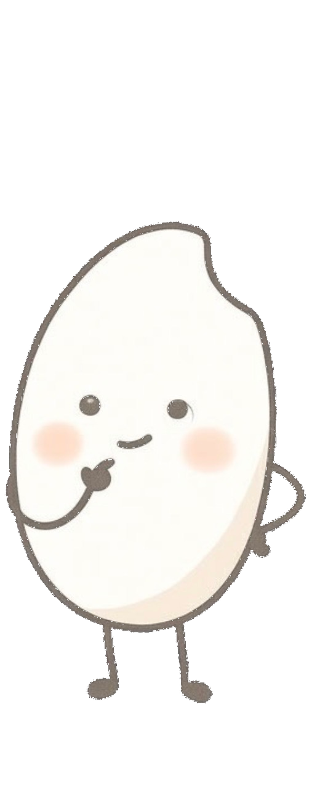
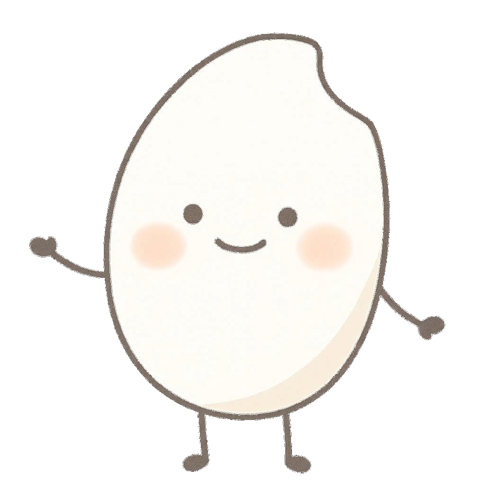
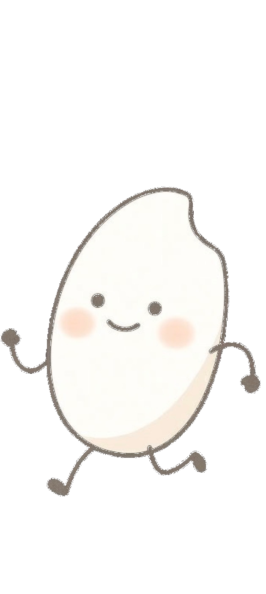
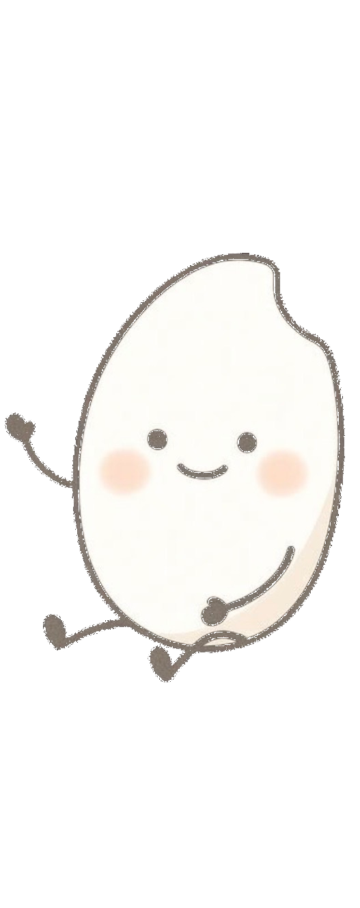

今夜の一杯を、もっと美味しく。
ラベルの言葉や造り方の秘密を少し知るだけで、いつものお酒が違った表情を見せてくれます。
気になるお酒をタップして、今夜の気分にぴったりの一杯を探してみませんか？
ことばを知る
気になる言葉があれば、タップすると解説が見られます。
特定名称酒の主な種類
日本酒のうち、原料や「精米歩合（お米をどれだけ削ったか）」などの一定の基準を満たしたものを「特定名称酒」と呼び、大きく8種類に分類されます。
分類の基本は、お米だけで造る「純米」、スッキリ仕上げるために醸造アルコールを加える「本醸造」、よくお米を削って香り高く仕上げる「吟醸」の組み合わせです。




そもそも
「精米歩合」とは？
どれくらい「削って残した」か
お米の外側には雑味の成分があるため、削るほどスッキリとして華やかな香りが生まれやすくなります。
例えば「精米歩合60%」は、外側を40%削り落とし、中心部の60%だけを贅沢に使ったという意味になります。
さまざまな「造り」
日本酒の味わいは、お米の削り方だけでなく、酵母（アルコールを作る微生物）の育て方や、火入れ（加熱殺菌）のタイミングなど、細かな「造り」の違いによっても大きく変化します。
ここでは、工程や処理の目的別に代表的な造り方をご紹介します。
吾熊の日本酒
現在、当店でご用意している日本酒の一覧です。
銘柄をタップすると、それぞれの特徴や味わいの解説を見ることができます。
※ご注文は口頭で承ります
何からできている？（原材料による「味」の違い）
焼酎の面白さは、なんといっても「原料のバリエーション」にあります。使う素材の個性がそのまま香りや味わいに表れるため、気分や料理に合わせて使い分けるのがおすすめです。
※アイコンをタップすると解説が表示されます
ラベルの正体を知ろう
お店で焼酎のボトルを眺めると、「本格焼酎」や「黒麹」、「常圧蒸留」といった見慣れない言葉が並んでいます。これらの言葉の意味が少しわかるだけで、飲む前からどんな味かがイメージできるようになり、お酒選びがもっと楽しくなります。
吾熊の焼酎
現在、当店でご用意している焼酎の一覧です。
銘柄をタップすると、それぞれの特徴や味わいの解説を見ることができます。
※ご注文は口頭で承ります
ラベルの正体を知ろう
ウイスキーのラベルに書かれている言葉は、そのお酒の「履歴書」のようなもの。どんな原料で、どんな場所で造られたかが隠されています。言葉の意味が少しわかるだけで、好みの味に出会う確率がグッと上がります。
Q. 「シングルモルト」の
「シングル」って何？
世界のウイスキーを知ろう
ウイスキーは世界中で造られ、愛されていますが、その中でも特に品質が高く、世界的なシェアを誇る5つの生産地があります。これらは「世界5大ウイスキー」と呼ばれています。
実は、歴史あるスコットランドやアイルランドに並んで、日本もそのトップ5の1つとして世界中から大絶賛を受けているんです。日本の職人の繊細な技術が評価され、昨今では空前の「ジャパニーズウイスキー・ブーム」が巻き起こっていると思うと、なんだかとても誇らしい気持ちになりますよね。
さまざまな個性
ウイスキーの奥深い世界に足を踏み入れると、造り手の熱いこだわりや、自然がもたらす偶然の産物に出会います。ウイスキー好きがバーカウンターでついつい語りたくなってしまう、ツウなトピックをご紹介しましょう。
ウイスキーの風味の大部分は「樽」で決まるとも言われます。以前何を入れていた樽かによって、お酒に驚くほどの魔法がかかるのです。
吾熊のウイスキー
現在、当店でご用意しているウイスキーの一覧です。
銘柄をタップすると、それぞれの特徴や味わいの解説を見ることができます。
※ご注文は口頭で承ります